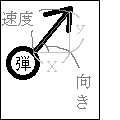

弾幕の作り方
Tweet皆さんこんにちは。作者名のスパゲッティソースというのは“スパゲッティみたいにこんがらかっていて読みにくいソースコード”という意味である。そんなソースコードを書く人がこんな部誌を書いていることを気にしたら負けである。
本題に入るが、弾幕とは簡単に言えば弾の複数形である。つまりゲームで敵が撃ってくる弾をどうやって作るのかを解説する。またこの部誌はC言語およびC++を基調としている。それ以外の言語では違うところが多々あると思うので、注意してほしい。
まずはグラフィックの調達だ。一般の企業が出しているようなクオリティの高いものでなければペイントで十分である。事実私も多用している。また透明化するソフトも必要だがそれは無料ソフト“手軽に透明”を私は使っている。透明化しかできないが十分である。どうしてもそれらができない場合は簡単な図形であれば描画する機能がC言語についているのでそれを使えば問題ない。ただし、少し処理が重くなることは考慮する必要がある。
次にソースコードを書いていく。まず、配列と呼ばれるものを用いてたくさんの変数を作る。といってもわからないであろうから、順に説明していく。まず、変数というのは箱みたいなものである。そこには数値をひとつ入れることができる。言い換えるとひとつしか入らない。であるがゆえにたくさん作る必要があるのだが、そのことはひとまず置いておいて、変数についてもう少し詳しく説明していく。ひとつしか数値が入らない変数に二つ目の数字を入れるとどうなるか、一つ目の数字が消えるのである。そこも使いやすい点であるのだが、それを知らないと混乱してしまうであろう。さらに、すべての数を入れられるわけではないということである。よく使われる変数の型であるINT型は-2147483468~2147483467までの整数しか入らない。小数を扱うならFLOAT型で約±3.4×10の38乗までで有効桁は7桁となっている。FLOAT型の方が多くの数を入れられるため便利に見えるが、その分多くのメモリを使う上に、“3で割った余りを求める”という時にも使えないので適材適所で使う必要がある。他にもたくさんの型があるが、私はこれ以外にほとんど使ったことがないのでこれだけあれば十分である。興味があれば調べてみても構わないが。
変数についてわかったところで、配列の説明に入る。難しく聞こえるかもしれないがなんてことはない。変数の複数形だと思えば良い。それをfloatbulletx[1024];などとすればよい。これは弾のX座標の配列の例である。つまり最低でももう一つfloatbullety[1024];が必要である。それ以外にも弾が様々な方向に飛ぶとすれば、その向きと速度の配列（もしくは移動方向のXとYの長さ）が必要である。ちなみに私は括弧内の方を使っているのだが、意味がわからない人は図１を見てほしい。また、1024というのは表示できる弾幕数の最大値となる。

それでは数値を代入していこう。例えば「にゃにゃめにゃにゃじゅうにゃにゃどのにゃらびでにゃにゃつのたまを（にゃにゃ,にゃにゃ）からはにゃつ」（斜め77度の並びで7つの弾を（7,7）から放つ）為にはどうすればよいか。ちゃんと説明しようと思うと三角関数（sin,cos,tan）や弧度法（ラジアン）が必要だが、まだ習っていない人のために簡単に言うとコンピューターに77度の三角形の縦、横、斜めの長さを計算させるだけである。それらがわかっている人にとっては本当にそれだけでいいの？と思うかもしれないが、コンピューターは計算がだーいすきなので、がっつりお仕事してもらおう。当然それらを相似拡大する必要があるが、ここまで読んだ人ならわかるであろう。ちなみに（7,7）から77度の角度で弾を放つとすぐに画面外に出て消えてしまうので、-77度で弾速7で7フレームおきに放ってもらおう。
/*初期化処理など*/
int a=-1;
int x; //一時的に弾の x 座標を保存するための変数
int y; //一時的に弾の y 座標を保存するための変数
int i;
int gametime=-1; //ゲームが始まってからの時間
float pi=3.141592; //円周率。ラジアンに変換する時に使う float bulletx[8];//今回は 8 個もあれば十分ですね。（以下同様） float bullety[8];
float bulletx2[8];
float bullety2[8];
/*初期化処理など 2*/
int white=GetColor(255,255,255);//白い色
while(ProcessMessage()!=-1){//エラーがない限りループする gametime++; //gametime に１を足す
if(gametime%7==0){//もし gametime を 7 で割った余りが 0 だったら a++;
bulletx[a]=7; //bulletx[a]に 7 を代入
bullety[a]=7;
bulletx2[a]=7*sin(-77*pi/180); //斜辺が 7、角度が-77 度の横の長さ bullety2[a]=7*cos(-77*pi/180);
}
for(i=0;i<8;i++){ //8 回ループ
bulletx[i]+= bulletx2[i];
bullety[i]+= bullety2[i];
x=bulletx[i]; //小数点以下を切り捨てて整数値に
y=bullety[i];
DrawCircle(bulletx[i],bullety[i],7,white,TRUE); //半径7の円を描画
}
If(gametime>=42){break;}//弾を 7 つ放ち終わる時間になったら終了概ねこんなかんじである。かなりはしょって書いたのでほとんどの人はわからないだろうが、興味を持ってくれたら幸いである。一応全然わかってない人のために言っておくが、「初期化処理など」のところを書いていないためこれをコンパイルしても動かない。加えてこれだと7つ目の弾を放った瞬間に終わるので、その弾は見えて一瞬である。さらに実行し始めてから0.7秒ほどで終わってしまう。配列の数を増やしてbreakを外せばしばらくの間はちゃんと動いてくれるだろう。存在しない箱を指定するとバグが発生するのでbreakだけ外してそれを楽しむのもまた一興であろう。私はこれよりも作るのが難しい弾幕に自機との当たり判定をつけ、さらに被弾時処理、ショット、ボムその他もろもろをたった一人で書き上げたのだ。しかしそれでも企業が出すようなゲームには到底及ばない。私が参考にしたゲームは私と同様一人で作成しているが、プログラミングだけでなくグラフィック、音楽までもちゃんと作り、エフェクトなども私のものよりはるかに上である。私たちの身近にあるゲーム。塾や親、学校の先生などは「勉強の敵」などと言うかもしれないが、作る視点に立ってみると、非常に難しく、多くのことを学べる分野である。それをただ否定するのはどうかと思う。（おっ、俺いいこと言った）